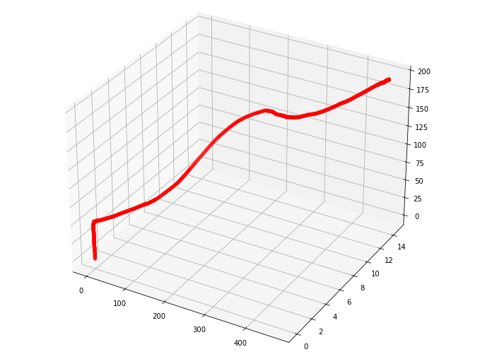
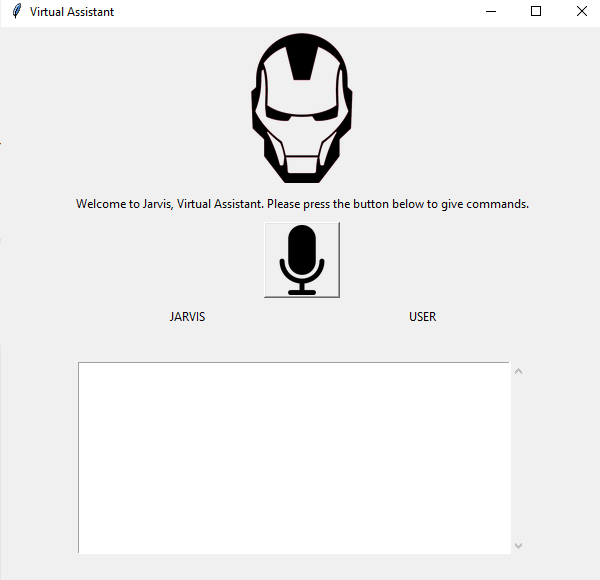
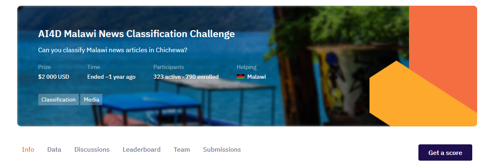
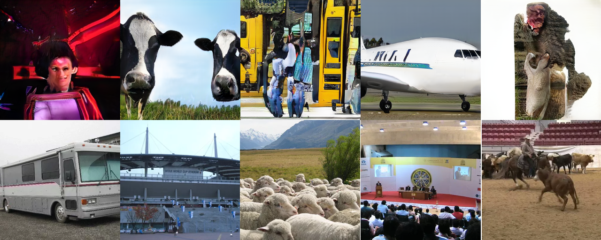
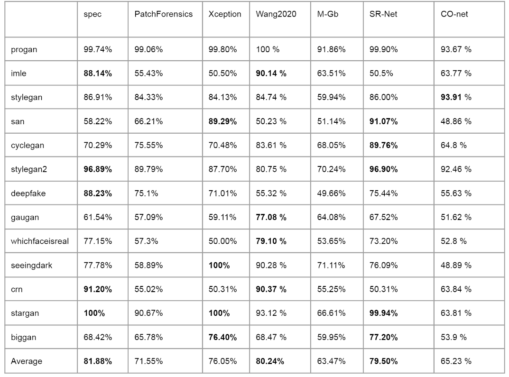

Experience
Work Experience & Internships
-
June 1st 2022 - PresentIndependent Contract: Applied Machine Learning (Remote)Binh Minh Group , Hanoi, Vietnam
-
June 1st 2019 - August 31st 2019Website Developer Summer InternBinh Minh Group , Hanoi, Vietnam
-
June 1st 2020 - August 31st 2020Website Developer Summer InternBinh Minh Group , Hanoi, Vietnam
Interesting Projects in AI/ML
1. Visual Odometry

Recover Camera's Path from Image sequence
Recovered Path:
Brief explanation: From left to right, you can see the red line goes up, corresponding to the camera moving forward, in the real world. When the camera path turns left or right, the red line moves the same way.
2. Virtual Assistant
Inspired by Jarvis in Iron Man, this is an implementation in our real world. This virtual assistant function the same way as Google's Alexa, or Apple's Siri. One up side is that: it is more personallized to me.
Functions included: send email, play a song, open an app, close an app, perform Google Search, check weather at the current location, check weather at a specific location, check movies ratings, look up wikipedia, define English words, set alarm.
3. Low Resource NLP Classification
A low resource language text classification competition on Zindi.africa. Training data includes only 1437 instances. Goal is to correctly classify 620 news titles in Chichewa language into their correct class among the 20 classes.
Results made top 10 in the competition.
4. GAN Images Detector
GANs has quickly became popular in the last several years. But GAN's uses for the goods is as huge as it is for the bads. We re-implemented several GAN-based method that helps us detect synthetic images.
Table explanation: On the left are the datasets that are tested on. On the top are the names of methods we tried.
Our experiment shows that, although most of the methods perform quite well on fake images that similar to what have been seen, those that were not seen can easily trick all detectors.